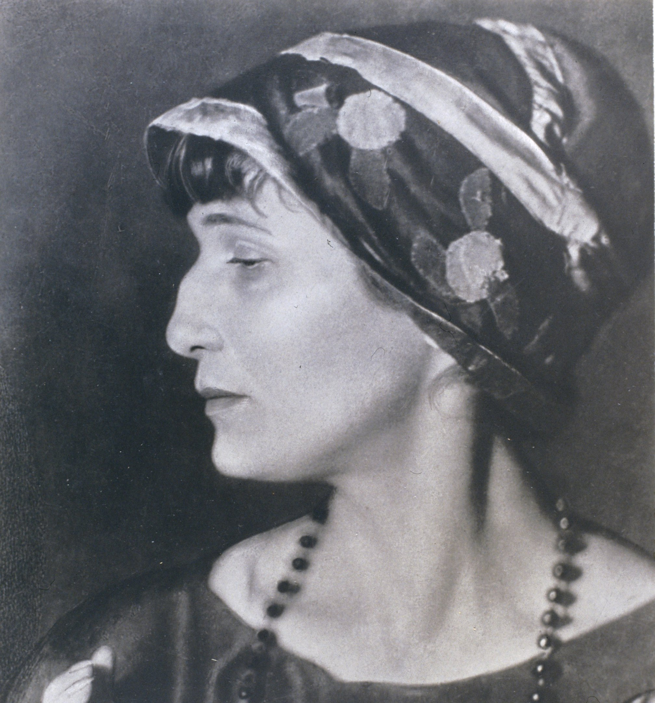

ни к чему одические рати
И прелесть элегических затей.
По мне, в стихах все быть должно некстати,
Не так, как у людей.
б вы знали, из какого сора
Растут стихи, не ведая стыда,
Как желтый одуванчик у забора,
Как лопухи и лебеда.
окрик, дегтя запах свежий,
Таинственная плесень на стене…
И стих уже звучит, задорен, нежен,
На радость вам и мне.

Анна Ахматова